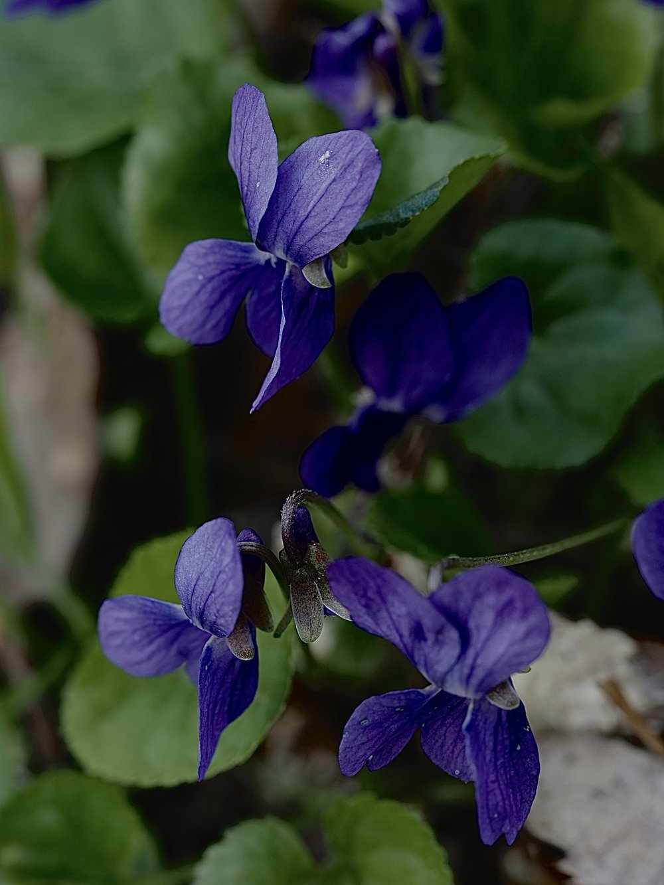
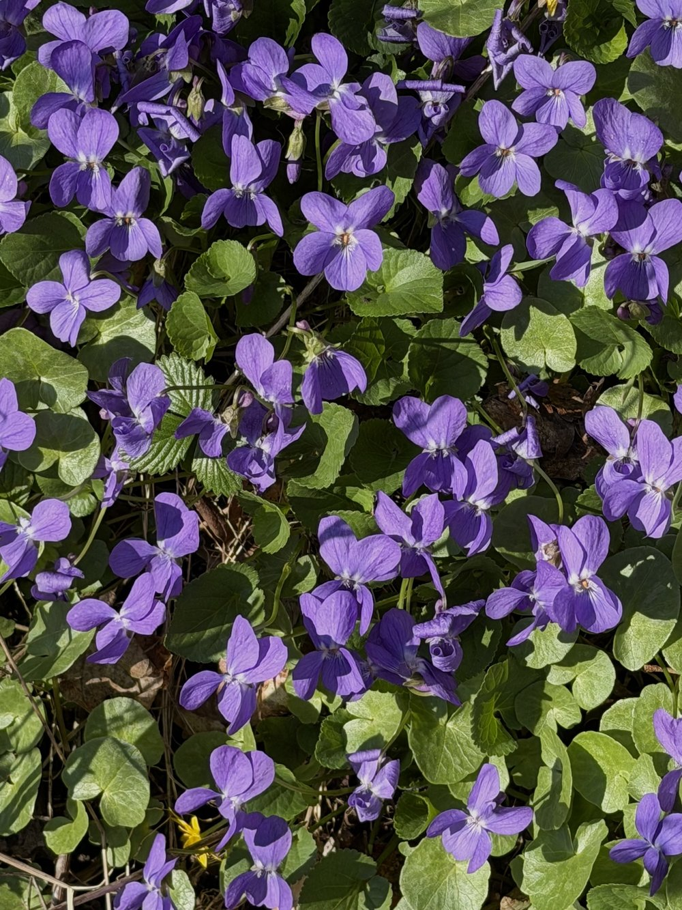

Wohlriechendes Veilchen



Der Duft, der eine Industrie schuf
Das Wohlriechende Veilchen war im 19. Jahrhundert eine der bedeutendsten Parfümpflanzen Europas. Ganze Landstriche in Südfrankreich und Norditalien wurden mit Veilchen bepflanzt, um das flüchtige Ionon – den Hauptduftträger – zu gewinnen. Ionon ist heute synthetisch herstellbar und steckt noch immer in vielen Parfüms. Der Duft einer einzigen Veilchenblüte hat eine ganze Industrie begründet.
Zwei Strategien, ein Ziel
Das Wohlriechende Veilchen blüht zweimal: Im Frühjahr öffnet es seine auffälligen, bestäubten Blüten – die aber selten Samen ansetzen. Im Sommer bildet es unscheinbare, geschlossene Blüten (Kleistogamie), die sich ohne Bestäubung selbst befruchten und zuverlässig Samen produzieren. Eine elegante Doppelstrategie: Genetische Vielfalt durch Kreuzbestäubung im Frühjahr, garantierte Nachkommenschaft im Sommer.